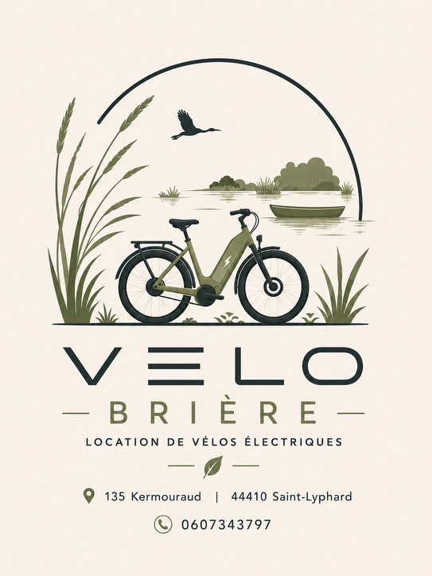
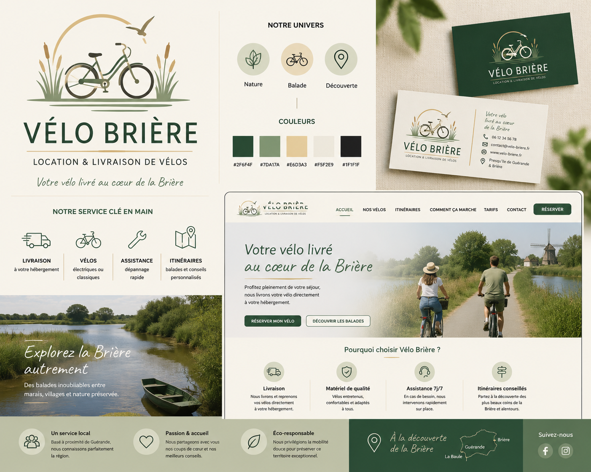

Identité de marque — v1.0
Votre vélo livré au cœur de la Brière
Vélo Brière loue et livre des vélos électriques aux visiteurs du Parc naturel régional de Brière. Cette charte fixe les règles d'usage du logo, des couleurs, des typographies et du ton qui font reconnaître la marque, sur le web comme sur le terrain.
02 — Symbole & logotype
Le logo
Un symbole illustré posé sur un logotype en deux poids : il raconte le lieu (roseaux, oiseau en vol, vélo) avant même de lire le nom.

- L'arc — un demi-cercle fin qui cadre la scène comme un horizon ; c'est le seul motif à réutiliser isolément dans les décors de marque.
- La roselière — deux touffes de roseaux qui encadrent le vélo, toujours en vert olive, jamais en couleur pleine du logotype.
- L'oiseau en vol — silhouette pleine en noir/vert très sombre, positionnée en haut de l'arc, jamais retournée ni dupliquée.
- Le vélo électrique — élément central, cadre bas et batterie visibles ; c'est le seul élément qui peut être utilisé seul comme favicon ou avatar social.
- Le logotype — « VÉLO » en capitales pleines et grasses (vert forêt), « BRIÈRE » en dessous, plus fin et très espacé (vert roseau).
- La signature — « Location de vélos électriques » en petites capitales espacées, toujours présente sous le logotype dans les usages institutionnels.
Espace de protection & taille minimale
Laisser autour du symbole une marge libre au moins égale à la hauteur du « É » de VÉLO — aucun texte, bord de carte ou photo ne doit entrer dans cette zone. En dessous de 28 px à l'écran ou 15 mm en impression, utiliser le vélo seul plutôt que le lockup complet : le logotype devient illisible.
Déclinaisons couleur
À éviter
- ✕Étirer, incliner ou faire pivoter le symbole ou le logotype.
- ✕Recolorer le logo hors de la palette de marque.
- ✕Séparer « VÉLO » de « BRIÈRE » ou changer leur hiérarchie de poids.
- ✕Poser la version claire sur une photo ou un fond chargé sans plaque de couleur unie derrière.
- ✕Ajouter une ombre portée, un contour ou un effet 3D.
- ✕Recomposer le symbole (déplacer l'oiseau, dupliquer les roseaux, etc.).
03 — Palette
Couleurs
Une palette de marais : verts profonds, sable et lumière du ciel breton. Le Blanc Brume reste toujours la couleur dominante — les autres teintes ponctuent, elles ne couvrent jamais un fond entier de texte.
Répartition indicative d'une page type : le Blanc Brume domine, le Vert Rivière porte les titres et boutons, le Vert Roseau habille les icônes et fonds de badges, le Sable Brière ponctue (séparateurs, surlignage), le Noir Tourbe sert uniquement au texte courant — jamais en aplat.
04 — Typographie
Typographie
Trois rôles, trois familles. On ne mélange pas : Poppins porte l'identité, Work Sans porte l'information, Caveat porte l'émotion — et seulement elle.
de vélos électriques
Nous livrons et reprenons vos vélos directement à votre hébergement. Vélos entretenus, confortables et adaptés à tous, avec une assistance 7j/7 sur la Presqu'île de Guérande et en Brière.
Explorez la Brière autrement
Réservée aux accroches courtes (une ligne, jamais un paragraphe) : titre de section immersive, carte postale, légende photo. Ne jamais l'utiliser pour un bouton, un prix ou un texte de plus de 6 mots.
05 — Icônes & motifs
Icônes & motifs graphiques
Un seul style de picto — trait fin, angles arrondis — posé dans un badge circulaire en alternance de fonds de la palette. Jamais d'icônes pleines ou d'un autre style (flat, 3D, emoji).
Motifs de séparation
Une ligne fine avec un point sable centré ou en fin de course : c'est la seule ornementation de séparation autorisée entre deux blocs de contenu.
06 — Photo & illustration
Photographie & illustration
Deux registres qui ne se mélangent jamais dans une même composition.
Illustration
Réservée au symbole et aux pictos : formes vectorielles simples, palette de marque stricte, aucune illustration décorative ailleurs sur le site ou les supports.
Photographie
Toujours en extérieur et en lumière naturelle : chemins de halage, canaux, marais, cyclistes vus de dos ou de trois-quarts, jamais posés face caméra en studio. Étalonnage discret vers les verts et les sables de la palette, sans filtre saturé ni noir et blanc.
07 — Ton de voix
Ton de voix
On vouvoie le visiteur, on nomme toujours le territoire, on va droit au bénéfice — jamais de jargon technique ou de superlatifs vides.
« Votre vélo livré au cœur de la Brière. »
« Bénéficiez d'une solution de mobilité douce optimale. »
« Nous livrons et reprenons vos vélos directement à votre hébergement. »
« Livraison et récupération assurées par nos équipes. » (froid, sans « vous »)
08 — Applications
Le système en usage
Palette, typographies et pictos appliqués aux supports réels de Vélo Brière : cartes de visite, site de réservation, réseaux sociaux.

La version inversée n'apparaît que sur fond Vert Rivière plein (cartes, bandeau de pied de page). Le site garde le Blanc Brume en fond dominant, avec le Vert Rivière réservé aux boutons d'action et aux titres.